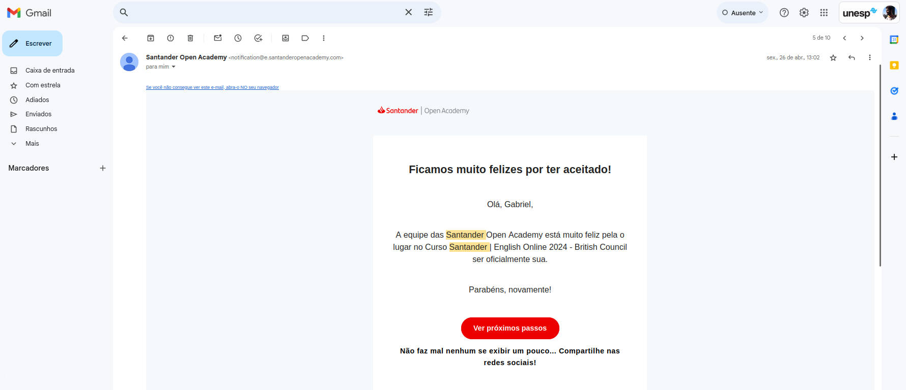

1. Santander
Há algumas etapas, antes de ser selecionado para a primeira fase do programa:
- 1º Etapa: Inscrição no site oficial do Santander (link).
- 2º Etapa: Teste de Habilidade (Raciocínio Lógico e Interpretação de Texto).
- 3º Etapa: Avaliação interna ao Santander.
- 4º Etapa: Seleção interna ao Santander.

2. British Council
O contato ocorre através de e-mails:
- 1º E-mail: Boas-vindas contendo informações sobre o programa.
- 2º E-mail: Cadastro à plataforma e escolha de nível CEFR.
- 3º E-mail: Formulário de Pesquisa/Feedback.
3. 1ª Fase
Ofertado:
- Acesso a curso self-study (estudo autónomo);
- Créditos limitados para Live25.
Duração: Oito semanas (20 de Maio a 14 de Julho de 2024).
4. 2ª Fase
Ofertado:
- 18 aulas síncronas e online com professores especialistas;
- Aulas relacionadas aos temas da primeira fase.
Duração: Vinte semanas (22 de Julho a 8 de Dezembro de 2024).
5. Plataforma e Certificações
A plataforma inclui os seguintes recursos:
- Themes: Seis temas com diferentes contextos, cada tema com lições e módulos.
- Live25: Aulas curtas e interativas com professores nativos.
- Badge: Certificação ao concluir todas as atividades de um tema.
- Extra Study: Recursos adicionais para estudos independentes.
Após finalizados os conteúdos e aulas, é cedido ao aluno certificações.
6. Conteúdo (Themes)
Explore os temas e lições oferecidas: